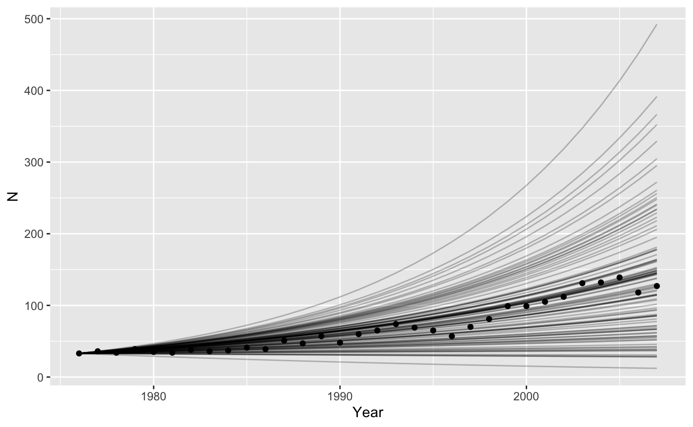
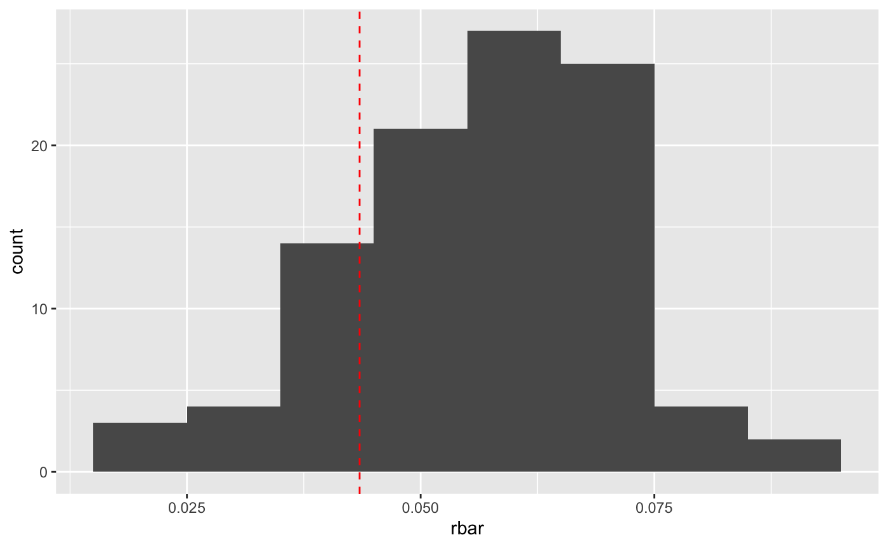
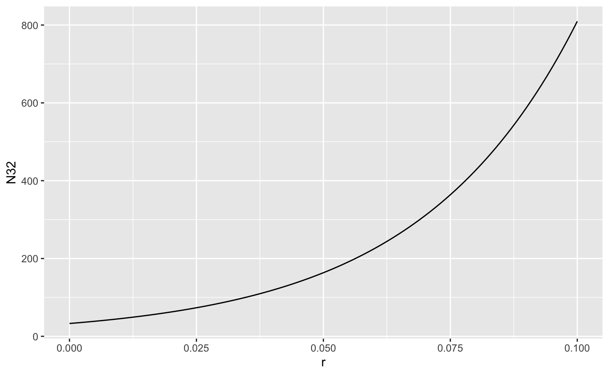
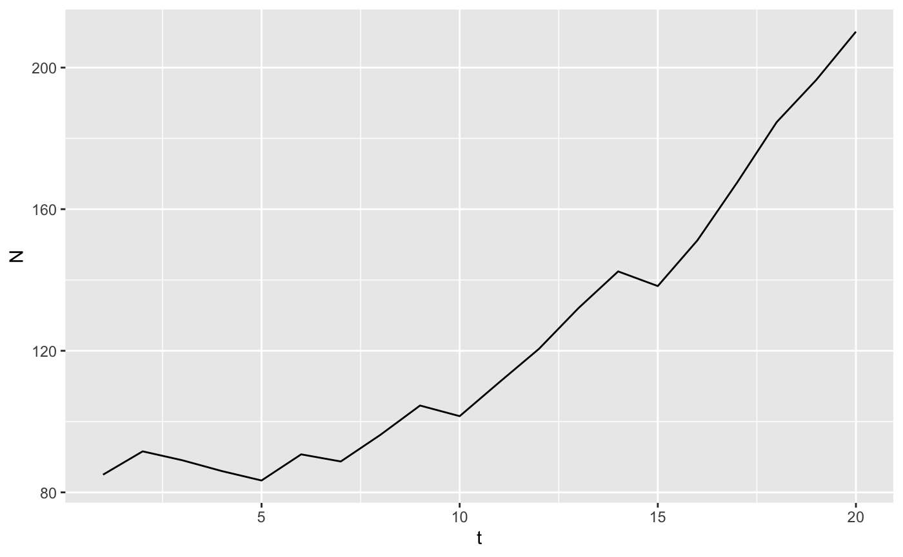

Demonstrate the use of tidypop for a range of ecological models, showing how to include stochasticity, time dependence, and make plots.
library(tidypop)
library(dplyr)
#>
#> Attaching package: 'dplyr'
#> The following objects are masked from 'package:stats':
#>
#> filter, lag
#> The following objects are masked from 'package:base':
#>
#> intersect, setdiff, setequal, union
library(tidyr)
library(ggplot2)
library(purrr)Exponential growth
tidypop uses discrete time, but I think the distinction between exponential and geometric growth is meaningless. The formula for the model is \[
N_{t+1} = N_{t}e^{r_t}
\] and in code:
tidypop::iterate() needs a tibble or dataframe with one row for each timestep. The name is arbitrary, but I call it parms. There must be one column for each argument to exppop() other than N0. It can be useful for plotting to include some kind of label for each timestep.
With those two pieces we can now use iterate to add a column with the projected population size called N. We also have to choose a starting population size.
results <- iterate(parms, 33, exppop)
head(results)
#> # A tibble: 6 x 3
#> t r N
#> <int> <dbl> <dbl>
#> 1 1 0.05 33
#> 2 2 0.05 34.7
#> 3 3 0.05 36.5
#> 4 4 0.05 38.3
#> 5 5 0.05 40.3
#> 6 6 0.05 42.4Making a plot is very straightforward with ggplot
or with base R
Stochasticity
To demonstrate how to add stochasticity using tidypop, I will use some real data to start with.
grizzly <- data.frame(Year = 1976:2007,
N=c(33, 36, 34, 39, 35, 34, 38, 36, 37, 41, 39, 51, 47, 57, 48, 60, 65,
74, 69, 65, 57, 70, 81, 99, 99, 105, 112, 131, 132, 139, 118, 127))These data are a 3-yr running sum of the numbers of unduplicated grizzly bear females observed with cubs-of-the-year, 1973-2006, in the greater Yellowstone ecosystem (Table 4 from Schwartz, C.C., M. A. Haroldson, and K. West, eds. 2006. Yellowstone grizzly bear investigations: annual report of the Interagency Grizzly Bear Study Team, 2006. US Geological Survey, Bozeman, Montana, USA). First observation is sum of 1973-74-75 counts, second is 1974-75-76, etc. Compare with Table 3 of Dennis and Taper (1994), which ends at 1991 and used an unofficial count for 1990 reported by IGBST via phone. Obtained from Brian Dennis’ website on May 13, 2017.
There are 3 sources of variability here: sampling error in population estimation, environmental stochasticity, and demographic stochasticity.
Sampling error - Epistemic uncertainty
Sampling error means that our estimate of the average rate of growth is uncertain, that is, \(\bar{r}\) is a random variable with some variance. One way we can proceed is to assume that all of the variation in the graph is sampling error. There is one true value of \(r\) at all times, but we don’t know what it is. So, calculate the per capita rate of population growth for all years, and calculate the mean and standard error. \[ r_t = log\left(\frac{n_{t+1}}{n_t}\right) \]
grizzly <- mutate(grizzly,
r = log(lead(N)/N))
sumry_griz <- summarize(grizzly,
rbar = mean(r, na.rm = TRUE),
r_se = sd(r, na.rm=TRUE)/sqrt(n()-1))
# test it out -- assumes you saved summary stats in data_frame called sumry_griz
parms <- tibble(t = 1976:2007,
r = sumry_griz$rbar)
head(iterate(parms = parms, N0 = 33, popfun = exppop))
#> # A tibble: 6 x 3
#> t r N
#> <int> <dbl> <dbl>
#> 1 1976 0.0435 33
#> 2 1977 0.0435 34.5
#> 3 1978 0.0435 36.0
#> 4 1979 0.0435 37.6
#> 5 1980 0.0435 39.3
#> 6 1981 0.0435 41.0We need to run the model with many different values of \(r\), sampled from the distribution of uncertainty we have for \(\bar{r}\).
nyears <- length(1976:2007)
bigparms <- tibble(
t = rep(1976:2007, times = 100),
r = rep(rnorm(100, sumry_griz$rbar, sumry_griz$r_se), each = nyears)
)
# split() breaks up a dataframe according to the values of f, into a list of smaller dataframe
# map_dfr() is a new function
# map_dfr() is like map but already glues results back into a data frame
bigresults <- split(bigparms, f = bigparms$r) %>%
map_dfr(~iterate(parms = ., N0=c(N = 33), popfun = exppop), .id = "rep")
# plot them all
ggplot(data = grizzly,
mapping = aes(x = Year, y=N)) +
geom_line(data = bigresults,
mapping = aes(x = t, y = N, group=rep),
alpha = 0.25) +
geom_point() 
Environmental stochasticity
We could also assume that all the variation in the graph is caused by variation in birth and death rates between years. Now we also draw random samples of \(r\), but we get a new value for each year, and pass that to our model as a vector.
lotsofr <- tibble(rep = rep(1:100, each=nyears),
t = rep(1976:2007, times = 100),
r = rnorm(100*nyears, sumry_griz$rbar, sumry_griz$r_se))
bigresults2 <- split(lotsofr, f = lotsofr$rep) %>%
map(~select(., -rep)) %>% #awkward, sorry
map_dfr(~iterate(parms = ., N0=c(N = 33), popfun = exppop), .id = "rep")
# plot them all
ggplot(data = grizzly,
mapping = aes(x = Year, y=N)) +
geom_line(data = bigresults2,
mapping = aes(x = t, y = N, group=rep),
alpha = 0.25) +
geom_point() Demographic stochasticity
Demographic stochasticity requires more work, because within our function we have to randomly choose how many individuals live, die, and give birth. We assume births happen before deaths.
\[ \begin{aligned} N_{t+1} = & N_{t} + bN_{t}- dN_{t} \\ N_{t+1} = & N_{t}(1 + b - d) \\ N_{t+1} = & N_{t}\lambda = N_{t}e^{r} \end{aligned} \]
Here \(\lambda\) is the ratio of population size between two times. \(log(\lambda) = r\), the intrinsic population growth rate. We will use the first version of the equation, because we want to manipulate \(b\) and \(d\) separately. Births will occur with a Poisson distribution with mean b*N. Deaths are binomial and occur with a probability \(1-e^{-d}\)1.
stch_exppop <- function(N0 = 10, t, b = 0.2, d = 0.1){
births <- rpois(1, b*N0)
deaths <- rbinom(1, N0, 1-exp(-d))
N1 <- N0 + births - deaths
return(N1)
}We can get the mean correct by remembering that \(b-d = r\). Before we assumed that \(d = 0\), but now we have to have a value bigger than zero (more realistic). The average trajectory will be unaffected by the values we pick, as long as the difference is \(\bar{r} = 0.0435\) but the variance will change. If we choose \(d = 0.2\) then \(b = 0.243\).
bigparms2 <- tibble(rep = rep(1:100, each = nyears),
t = rep(1976:2007, times = 100),
b = 0.2+sumry_griz$rbar,
d = 0.2)
# split() breaks up a dataframe according to the values of f, into a list of smaller dataframe
# map_dfr() is a new function
# map_dfr() is like map but already glues results back into a data frame
bigresults2 <- split(bigparms2, f = bigparms2$rep) %>%
map(~select(., -rep)) %>%
map_dfr(~iterate(parms = ., N0=c(N = 33), popfun = stch_exppop), .id = "rep")
# plot them all
ggplot(data = grizzly,
mapping = aes(x = Year, y=N)) +
geom_line(data = bigresults2,
mapping = aes(x = t, y = N, group=rep),
alpha = 0.25) +
geom_point() 
That looks like the mean is maybe a bit high. Let’s check.
bigresults2 %>%
group_by(rep) %>%
mutate(r = log(lead(N)/N)) %>%
summarize(rbar = mean(r, na.rm = TRUE),
r_se = sd(r, na.rm = TRUE)/(n()-1)) %>%
ggplot() + geom_histogram(mapping = aes(x = rbar), binwidth = 0.01) +
geom_vline(xintercept = sumry_griz$rbar, color = "red", linetype=2)
So it is a bit high. That’s probably because of “non-linear averaging”.
nla <- tibble(r = seq(0.0, 0.1, 0.001),
N32 = 33*exp(r*32))
ggplot(nla,
mapping = aes(x = r, y = N32)) + geom_line()
Population size as a function of r is concave up, so if r is varying randomly, the average of the growth rates is higher than the growth at the average rate. The variation induced by our demographic stochastic model might be too high as well.
Structured Population Models
The argument N0 can be specified as a vector, enabling us to use structured population models. The projection matrix \(A\) needs to be stored in a list-column of the input parameters. So
# create the projection matrix
A <- matrix(c(0, 0, 1,
0.75, 0, 0,
0, 0.9, 0.9), nrow = 3, byrow = TRUE)
# store it in the tibble as a replicated list
inputs <- tibble(t = 1:20,
A = rep(list(A), 20))
# create the one line function
project_matrix <- function(N0, A){
# need to add [[1]] to "unlist" A
A[[1]] %*% N0 # matrix multiply and return result
}
head(iterate(inputs, N0 = c(1,1,1), project_matrix))
#> # A tibble: 6 x 5
#> t A N1 N2 N3
#> <int> <list> <dbl> <dbl> <dbl>
#> 1 1 <dbl[,3] [3 × 3]> 1 1 1
#> 2 2 <dbl[,3] [3 × 3]> 1 0.75 1.8
#> 3 3 <dbl[,3] [3 × 3]> 1.8 0.75 2.30
#> 4 4 <dbl[,3] [3 × 3]> 2.30 1.35 2.74
#> 5 5 <dbl[,3] [3 × 3]> 2.74 1.72 3.68
#> 6 6 <dbl[,3] [3 × 3]> 3.68 2.06 4.86Stochastic projection matrices
I will use some matrices calculated from some data for helmeted honeyeaters.
This bird is critically endangered, restricted to 3 small populations just east of Melbourne. Zoos Victoria contributes to conservation by captive rearing individuals to supplement wild populations, as well as maintaining a captive population “lifeboat” for the species. The matrices are stored in a list hh_A, and the associated population vectors are in hh_N.
big_list_matrices <- tibble(t = 1:20,
A = sample(hh_A, 20, replace=TRUE)) # pick a matrix randomly 20 times
# make the projections using matrix multiplication
stoch_proj <- function(N0, A, t){
N1 <- A[[1]] %*% N0 # the [[1]] extracts the matrix from the list
return(N1)
}
onerep <- iterate(parms = big_list_matrices, N0 = hh_N$N1991, popfun = stoch_proj)
stoch_summary <- onerep %>%
gather(key = "ageclass", value = "N", 3:12) %>% # stack up the population sizes in each year
group_by(t) %>%
summarize(N=sum(N)) # reduce to one row per year
ggplot(stoch_summary, aes(x=t, y=N)) + geom_line()
This works because we’ve stored the matrices in a list-column of the dataframe parms. We can do replicates as well.
big_list_matrices <- tibble(t = rep(1:20, time = 10),
rep = rep(1:10, each = 20),
# pick a matrix randomly 20 times
A = sample(hh_A, 200, replace=TRUE)) %>%
nest(-rep) # create a list of dataframes, one per rep defaults to name data
manyreps <- big_list_matrices %>%
# we've used map() and friends before, runs our model with each element of a list
mutate(data = map(data, function(X) iterate(parms = X, N0 = hh_N$N1991, popfun = stoch_proj))) %>%
unnest() # pop everything back out of the list of dataframes
stoch_summary <- manyreps %>%
gather(key = "ageclass", value = "N", 4:13) %>% # stack up the population sizes in each year
group_by(t, rep) %>%
summarize(N=sum(N)) # reduce to one row per year
ggplot(stoch_summary, aes(x=t, y=N, group=rep)) + geom_line()Deriving that is a bit complicated. \(d\) is the death rate in continuous time. The probability of 0 deaths in an interval of time is \(p(deaths = 0) = e^{-d}\), which is the zero term of a Poisson distribution. We need the probability of at least 1 death so \(p(death > 0) = 1 - e^{-d}\) by the law of total probability.↩